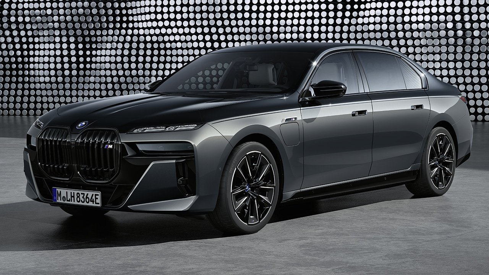
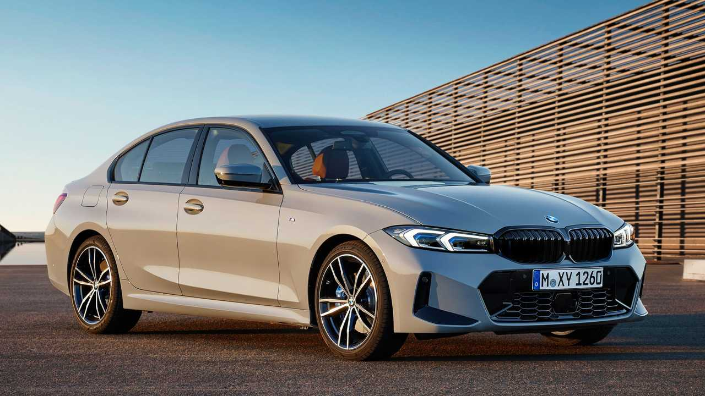
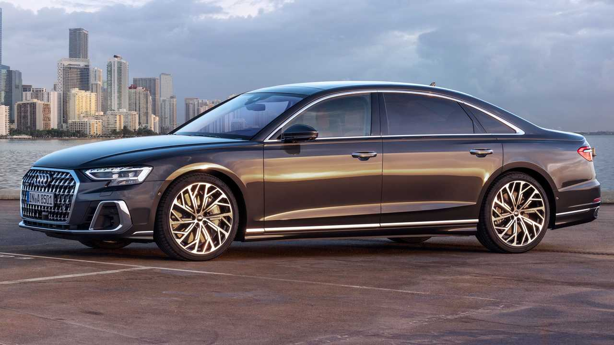

Versatility is at the heart of the BMW 5 Series Sedan. With its rigid body and lightweight construction, this four-door can tackle any road with agility, precision, and ease. Customize your experience with smart drive modes that automatically adjust the vehicle's settings to match your mood, from performance-oriented to energy conscious. Get ready for performance you can feel with a finely-tuned BMW TwinPower Turbo engine. Take your pick of precision power plants, ranging from a 2.0-liter inline 4-cylinder of a 530i model to the inline 6-cylinder engine with efficient 48V mild-hybrid technology on the 540i models. Or, pick up the pace with the V-8 engine in the M550i xDrive Sedan.
The 2023 7 Series Sedan includes numerous standard safety features, including Active Blind Spot Protection, Frontal Collision Warning with City Collision Mitigation, Lane Departure Warning, and Active Park Distance Control. The available Driving Assistance Professional Package and Parking Assistance Package offer additional active safety technology. Finally, the vehicle frame is built with an eye towards passive protection in the event of a collision. The 2023 BMW 7 Series Sedan includes advanced technology befitting a large luxury vehicle. An available 31” BMW Theater Screen with Personal eSim 5G connectivity and built-in Amazon Fire TV entertains and relaxes rear-seat passengers. Touchscreens in the rear doors adjust climate and comfort settings. Available Automatic Door technology opens and closes the front and rear doors touch-free. The BMW 7 Series is also equipped with the most advanced iDrive Operating System, featuring cloud-based navigation and convenient Remote Software Upgrades.

The original 3 Series Sedan brought power, agility, and spirit to the everyday driver. With efficient technology and refined engineering, that performance has only grown more pronounced. The 3 Series brings power and innovation together in a sedan made to move from the combustion engine and integrated electric motor of the 330e to the M340is robust inline-6 that can generate up to 382 horsepower. With a low center of gravity, lightweight components, and a suspension tuned to perfection on the grueling Nürburgring, this compact sedan delivers incredible sportiness and dynamics. The performance and design of the 2023 BMW 3 Series Sedan classify it as a sports car. BMW offers several powerful engines for this model, including a 4-cylinder capable of generating up to 255 horsepower, a BMW M 6-cylinder that boasts a maximum output of 382 horsepower, and a combination 4-cylinder gasoline engine and electric motor with an output of 288 horsepower.

While some large luxury sedans are designed to turn heads with their flamboyant styling, the 2023 Audi A8 wears a more tailored, professional appearance that has a unique appeal. The big Audi is just as roomy and comfortable as rivals such as the BMW 7-series and the Mercedes-Benz S-class inside, and a host of high-tech features makes staying connected during travel easy. Extensive sound deadening measures ensure the A8s cabin is whisper-quiet, drowning out even the sound of the turbocharged V-6 engine. This makes the A8 a relaxing place to reflect as your driver shuttles you to your next board meeting. But the A8 isnt only pleasing to those chauffeured in the back. Its driver will be pleasantly surprised at how nicely this large car can handle. While its not as athletic as the sportier S8 (reviewed separately), the A8 can hold its own if you come across a particularly curvy stretch of tarmac.

We all know someone a little cooler, and in the case of the three-row Audi Q7 SUV its the Q8—the more stylish two-row fraternal twin that shares the same underpinnings. The Q8s proportions are wider, shorter, and lower but the dramatic design sacrifices back-seat headroom, passenger capacity, and cargo area to the Q7 as the Q8 is only offered as a five-seater with two rows. Power comes from a turbocharged 335-hp V-6 engine with an eight-speed automatic and all-wheel drive, the same powertrain as in the Q7s upper trim levels. The 500-hp SQ8 and even crazier 591-hp RS Q8 are reviewed separately. The joy experienced while driving the Q8 is a benefit of sharing platforms with the Bentley Bentayga and Porsche Cayenne SUVs. The Q8s chassis balances crisp, reassuring handing with a supple ride. Even if it's not as athletic as other “SUV coupes” like the BMW X6 or Mercedes-Benz GLE coupe, its still enjoyable to drive—and certainly less strange looking. Its also a cheaper alternative to the A8 full-size luxury sedan by more than $15,000.

As Audi's top model, the R8 sports car boasts a howling 602-hp V-10 engine just behind its snug two-seat cabin. It shares a lot with the Lamborghini Huracán, but the R8 is less flamboyantly styled. It's also less engaging to drive, but buyers seeking a super car that they can drive daily may find the Audi's refinement appealing. The interior is sparsely equipped, with all infotainment functions handled via the digital gauge cluster, but it's still a comfortable and upscale environment worthy of the R8's steep starting price. More cargo space would be appreciated, but that's not why you buy a car like this. You buy an R8—or its rivals, the Porsche 911 and McLaren 570S—for the fun that comes from driving it.

The Mercedes-Benz SLS AMG (C197 / R197) is a front mid-engine, 2-seater, limited production grand tourer developed by the Mercedes-AMG division of German automotive manufacturer Mercedes-Benz, with the assistance of David Coulthard. The car is the successor to the Mercedes-Benz SLR McLaren and was described by Mercedes-Benz as a spiritual successor to the Mercedes-Benz 300SL Gullwing, mainly because it was inspired by the latter. SLS stands for "Super Leicht Sport" (Super Light Sport). The SLS was the first Mercedes-Benz automobile designed and built from scratch entirely by AMG.Upon its introduction at the 2009 Frankfurt Motor Show, the SLS AMG's 571 PS (420 kW; 563 hp) M159 engine was according to AMG "the world's most powerful naturally aspirated production series engine" ever produced.

The Mercedes-Benz CLS (initially called the CLS-Class) is a series of executive cars produced by Mercedes-Benz since 2004. The original model was a four-door fastback sedan based on the Mercedes E-Class platform, marketed as a four door coupé.An estate (Shooting Brake) model was later added to the model range with the second generation CLS.All models are available as a high performance AMG variant, although it wasn't until the second generation CLS that 4MATIC all-wheel drive was offered. The CLS range is positioned between the E-Class and the S-Class within the Mercedes model range,and models tend to be less practical than the E-Class it is based on.It primarily competes with other fastback sedans like the BMW 8 Series Gran Coupe, Porsche Panamera and Audi A7.

If you close your eyes and picture a Porsche, its likely that the 911 renders first in your imagination. This rear-engined fastback is a legend—and for good reason. Make that many reasons. For decades it has been a benchmark for performance and handling and feel, inspiring rivals such as the Aston Martin Vantage, the Audi R8, and the Maserati MC20, to name a few. The “standard” 911 sticks to its roots with a set of twin-turbo flat-six engines that have been tuned for up to 473 horsepower. Higher-performance Turbo and GT3 models are available—this is Porsche, of course—but we review those cars separately. Most 911 models have rear wheel drive but all-wheel drive is available. Coupe, cabriolet convertible, and Targa body styles are offered, and they have a cabin that is comfortable for two adults whether its been decked out in luxuries or left bone stock. The 911s superiority stems not only from its lofty performance capabilities but also the fact that its comfortable enough to live with on a daily basis.

Sports car driving characteristics are typically a low priority for electric cars, but the Porsche Taycan makes driving fun paramount. Porsche used battery power as an opportunity rather than an excuse, building a four-door vessel designed for human engagement instead of autonomous, soulless transport. While its maximum EPA estimated range of 227 miles is easily bested by competitors such as the Tesla Model S and Lucid Air, the Taycan drives as a Porsche should: with imperious confidence and control. From the 402-hp single-rear-motor base model to the absurdly quick 750-hp Turbo S, every Taycan uses a two-speed transmission that balances epic acceleration with highway cruising range that exceeds expectations. Theres also a wagon version of this sedan, dubbed the Taycan Cross and Sport Turismo, reviewed separately. Thanks to an 800-volt architecture, the Taycan can charge at a rate of up to 270 kWh on a powerful-enough DC fast charger. A low-slung driving position and 16.8-inch curved display help complete the typical Stuttgart driving experience.